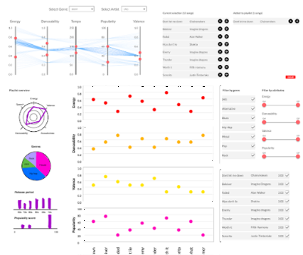
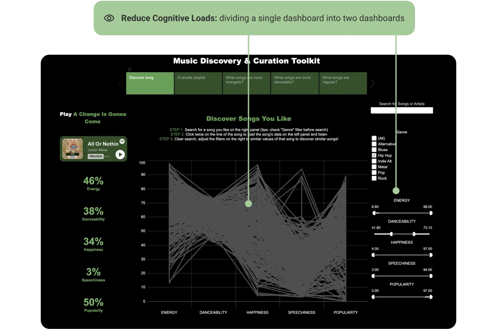
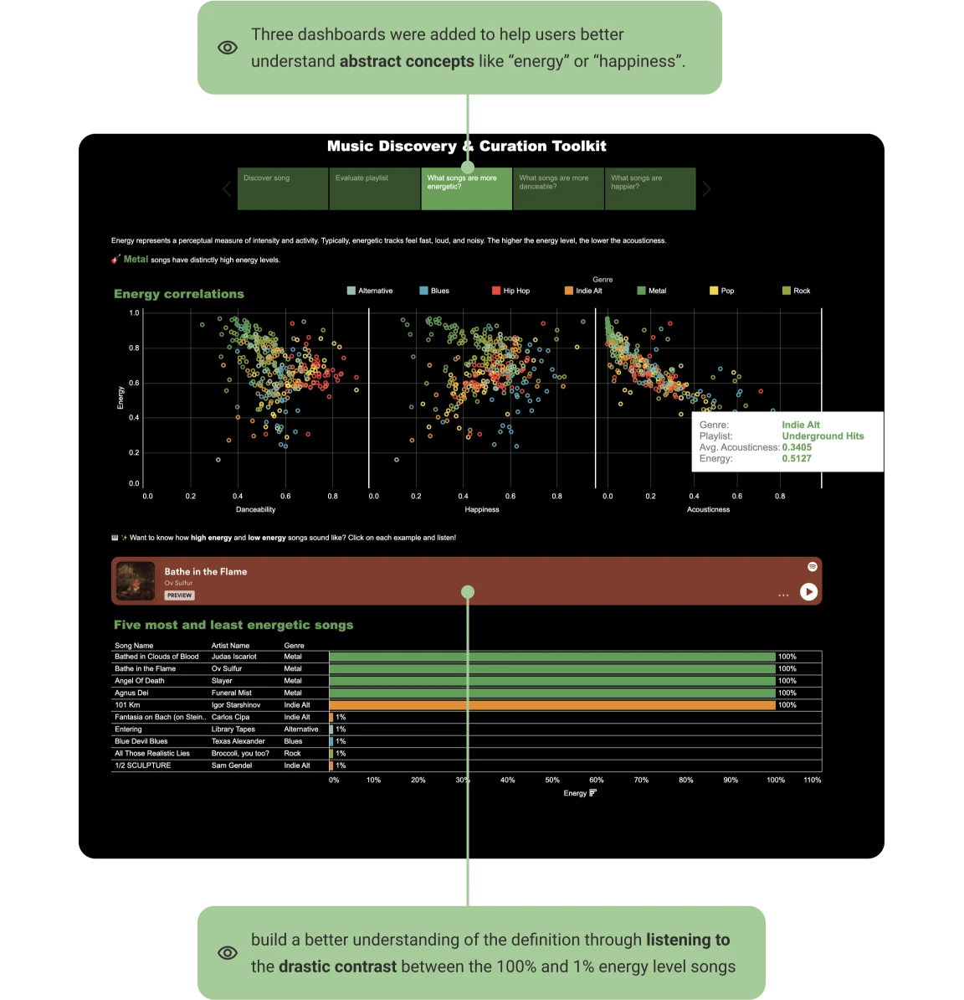

Challenge 1
Testing low-fidelity prototypes to get “thick data”
Besides gaining “big data” from secondary research, I decided to zoom in with “thick data” to understand how DJs feel, think, and interact with the low-fidelity prototype with usability testing.
Two prototype versions were crafted: Version A is a modification from the 3 design sheets for their respective tasks based on feedback, while Version B is a dashboard where both tasks are performed. Using the Think Aloud method, three participants engaged with both prototypes.

Prototype A: Parallel coordinates visualization & Dashboard visualization
.webp)
Prototype B: Tableau scatter plot
Key Insights: Participants preferred Prototype A over Prototype B
Participants usually start creating playlist with a song in mind and find similar songs, instead of values of attributes in mind
Participants want to have a better understanding of what the attributes mean
Participants think a concise and consistent summary of the playlist is more important than details of each song
Think about users' natural song discovery process: let them search for a song before applying filters.
Attributes require clearer explanations for user comprehension. Redesign to simplify musical terminology into plain language
Include instructional text to guide users on visualization usage (e.g., sliders, song reordering)
Challenge 2
Giving up on designs and detouring on tools
I first used
Google Colab to create Python-based parallel coordinates. However, I had many challenges including lag in interactions due to the dataset's size and time constraints due to the steep Python learning curve.
Breakthrough 2
Re-evaluating Design Tools
Concurrently, my teammate was exploring parallel coordinates using Tableau. As a team, we re-evaluated the feasibility and limitations of both tools, ultimately choosing Tableau based on factors like time, resources, and our group's capabilities.
Challenge 3
Too many data points to read
At first, the dashboard combined parallel coordinates, scatter plots, and tables for playlist evaluation (Figure below). However, the extensive data led to poor visualization readability.
Breakthrough 3
Dividing dashboards to reduce the cognitive loads
After adding all the filters and sliders for parallel coordinates, I broke the single dashboard into two dashboards to minimize cognitive loads and make task-specific information easier to digest.




.webp)

.gif)